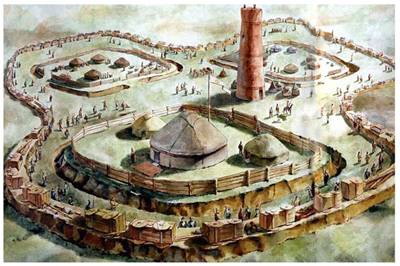
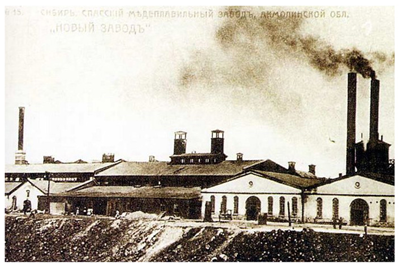

阿斯塔纳的建立和发展史与整个阿斯塔纳的历史息息相关。 1831年，现代哈萨克斯坦的北部地区成为当时最强大的俄罗斯帝国的臣民。这样做是为了保护哈萨克的土地免受外国入侵者的破坏和削弱。并且已经在 1832 年，在 Karaotkel 地区的伊希姆河右岸，建立了阿克莫林斯克的军事要塞。它的建造是为了保护哈萨克大草原的南部边界不受准噶尔人的影响，准噶尔人一再扰乱当地居民。堡垒完美地完成了任务，随着时间的推移，军事要塞发展到了城市的规模。后来，城市名称被转移到整个地区，阿克莫林斯克成为地区中心。 这座城市一直发展迅速。虽然现在他还不到两百岁，但他已经换了好几个名字：阿克莫林斯克、采利诺格勒、阿克莫拉、阿斯塔纳。如果阿克莫林斯克这个名字将这座城市的历史与俄罗斯帝国联系起来，那么采利诺格勒 - 苏联时期是俄罗斯的一部分。这座城市的名字意为“处女地之城”，当时开始积极开发。一项宏伟计划的实施导致在这里建造了一个火车站，并铺设了一条铁路线。正是在这片土地上，来自整个联盟的成千上万的工人来到了处女地。现在，阿克莫拉地区被认为是小麦种植最丰富的地区之一。 1992年，随着哈萨克斯坦独立，决定恢复城市的历史名称——阿克莫拉，但发音为哈萨克语版本。 1998 年，当首都从阿拉木图迁至这里时，这座城市获得了另一个名称。如您所见，阿斯塔纳的历史也是新哈萨克斯坦形成的历史。今天，阿斯塔纳是世界上最年轻的首都。今天的阿斯塔纳是一个完全不同的城市。莫斯科市长在参观改造后的阿斯塔纳时说：“阿斯塔纳只是一个开始，我在这里感受到了哈萨克斯坦未来的活力。”阿斯塔纳理所当然地被认为是一个走上复兴和发展道路的国家的代表。
城镇居民富裕了，城市发展了，商人的房子增加了。从 20 世纪初开始的一些建筑例子一直保存到今天 - 商人 Yaushev 的前贸易商行、一座清真寺、Furor 电影院大楼，现在是俄罗斯戏剧院的所在地，以及其他一些历史和文化建筑。对象。伟大卫国战争期间，苏联的企业撤到了这座城市——来自赫尔松的布尔什维奇卡制衣厂，来自辛菲罗波尔的制革厂的部分设备，以及来自克林的短纤和人造纤维厂。正是这些疏散的工厂和工厂为草原城市的工业基础设施奠定了基础，并推动了其经济的自动发展。自 1950 年代中期以来，交通开始发展——空中交通和道路建设。处女地和休耕地的开发对城市的发展产生了巨大的影响。库斯塔奈是处女史诗的中心之一。正是在这一时期，库斯塔奈地区迅速发展成为农业和工业区。
这座城市发展迅速，到 20 世纪初，这座城市拥有当时发达的基础设施。一个有趣的事实是，这座城市有一家啤酒厂，它是由瑞士人建造的，在 20 世纪初，它是整个南乌拉尔和现代哈萨克斯坦领土上的一家大型工厂。这座城市有学校、商店、集市等等，这让它拥有了城市的地位。这座城市是一个主要的贸易中心，是连接亚洲和俄罗斯的重要纽带。 1911 年，超过 25,000 人居住在库斯塔奈——是阿克莫林斯克的两倍。这座城市是多民族的；哈萨克人和俄罗斯人，布哈拉人和波兰人，巴什基尔人和鞑靼人，以及其他民族并肩生活。许多商队路线汇聚于此，工匠们工作，商人蓬勃发展——当地的集市在整个乌拉尔都很有名。